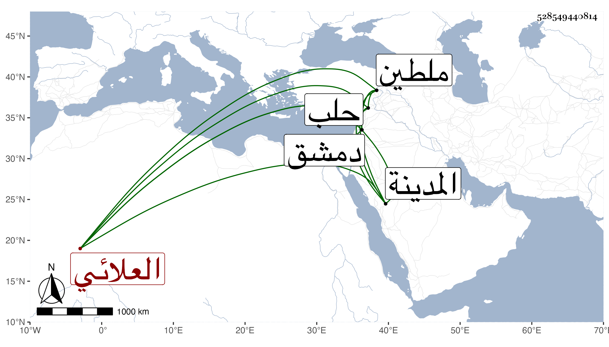

0902Sakhawi.DawLamic.ITO20230111-ara1.EIS1600.528549440814
Biography ID: 528549440814
38
طوغان قيز العلائي علان أحد المقدمين في الدولة الناصرية . ترقى بعده حتى صار في الدولة المؤيدية رأس نوبة الجمدارية ثم أمره الظاهر جقمق عشرة ثم عمله أميرآخور ثالث ثم استادارا بعد الناصري محمد بن أبي الفرج سنة أربع وأربعين ثم انفصل عنها حين خدع بطلبه الاستعفاء وأخرج إلى البلاد الشامية وتنقل في نيابة ملطية ثم أتابكية حلب ثم مقدما بدمشق ، وسافر أمير الركب الشامي ورام القبض على بعض قطاع الطريق فاستجار بأحد أبواب المدينة النبوية فأراد أن يحرقه بل يقال أنه أوقد به النار فلما بلغ ذلك السلطان قبض عليه وحبسه بقلعة دمشق بل كتب الزين الاستادار لتخوفه من عوده إلى الوظيفة محضرا بكفره وما بلغ قصده بل دام في الحبس مدة ثم أطلق واستمر حتى مات في أواخر سنة ثلاث وستين أو أوائل التي تليها ، وكان رئيسا معظما في الدول ذا ذوق ومحاضرة في الجملة ومعرفة بتأدية الموسيقى .
